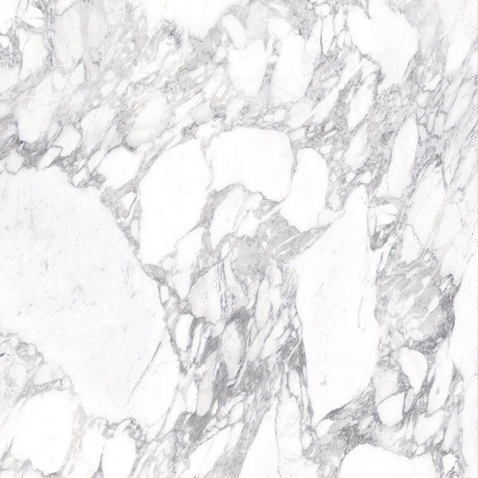
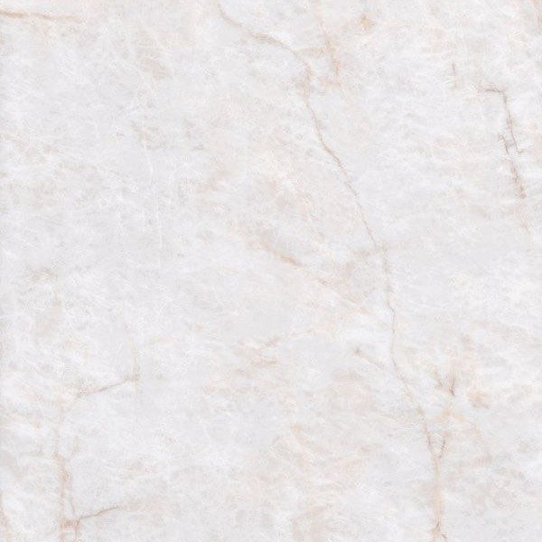
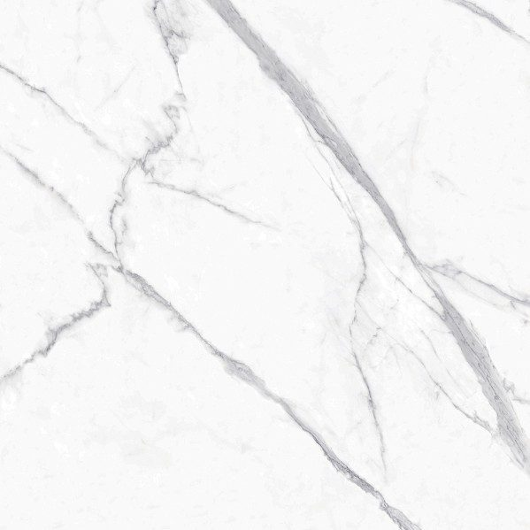
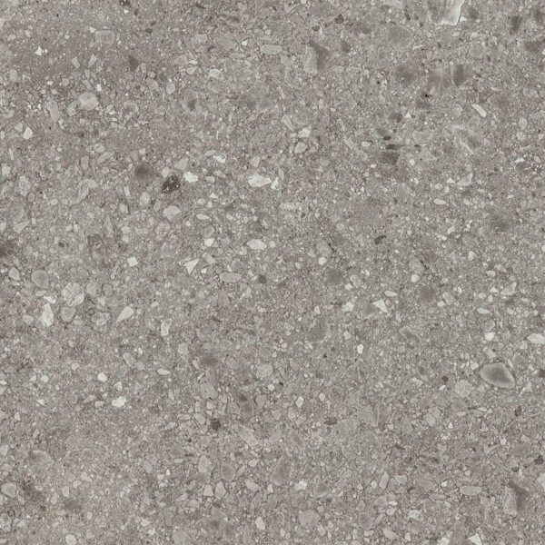
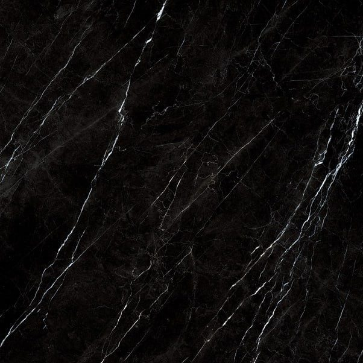
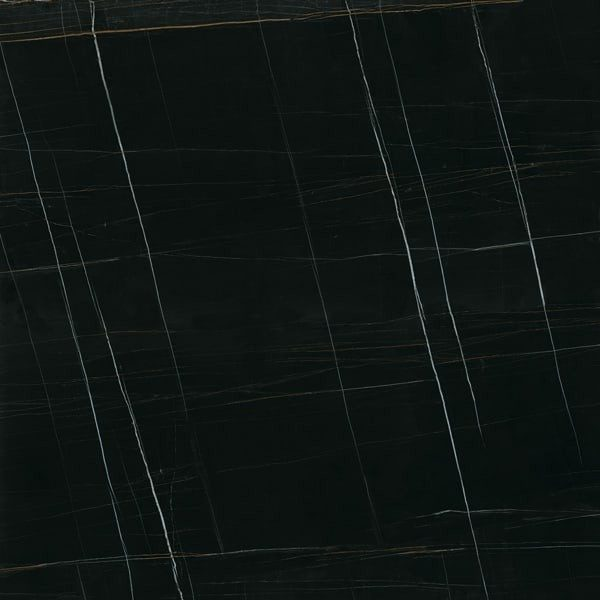
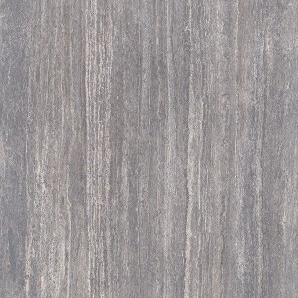
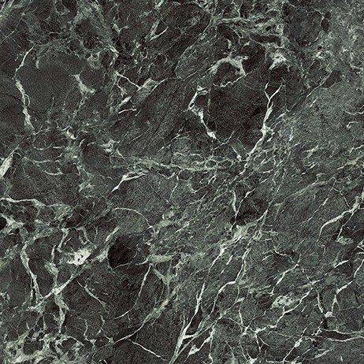

Infinity Surfaces
Infinity: Italian porcelain for a marble-effect worktop
Infinity worktops bring together Italian ceramic know-how and designs inspired by the finest marbles. This large-format porcelain resists acids where real marble would dull, which makes all the difference in a kitchen. We offer eight designs, cut to measure in our Mafra factory.
Worktops in Infinity Ceramic
Infinity is a large-format porcelain made in Italy by sintering natural minerals at over 1,200 °C. Its non-porous surface resists scratches, heat, stains, UV and acids, with no sealing required. Marble, stone and concrete looks are available for worktops, splashbacks, walls, floors and facades.
Infinity Ceramic
- Polished
- Satin
- Matt
- Lev (matt)
- Thicknesses 12 mm / 20 mm
- Origin
- Italy
- Sintering
- > 1,200 °C
- No sealing
- Non-porous
- Thicknesses
- 12 / 20 mm
Finishes and formats
- Polished
- Satin
- Matt
- Lev (matt)
- 12 mm · 20 mm
Infinity Ceramic colours
8 colours available, which you can also see in person at our Mafra factory by appointment.

Calacatta MagnificoPolished · Satin · MattMarbled white with bold grey and golden veins.
Crystal IcePolished · Satin · MattIcy white with crystalline glints.
Extra StatuarioPolished · Satin · MattStatuary white with elegant grey veins.
Milan StonePolished · Satin · MattUrban grey stone with a subtle grain.
Nero MarquiniaPolished · Satin · MattDeep black with contrasting white veins.
Sahara NoirPolished · Satin · MattIntense black with golden and white veins.
Travertino GreyPolished · Satin · MattGrey travertine with natural layering.
Verde FrancePolished · Satin · MattDeep green marble with light veins.
Inspiration
Infinity CeramicKitchen setting Infinity CeramicBathroom setting Infinity CeramicWorktop setting


Why choose Infinity for your worktop
Infinity answers a common wish: the elegance of marble without its fragility. Sintered at over 1,200 °C, this porcelain made in Italy forms a non-porous surface that needs no sealing whatsoever. Lemon, vinegar or red wine leave no trace, and heat, scratches and UV are no concern.
Its designs cover marble, stone and concrete effects, with four finishes: polished for depth, satin for a subtle sheen, and matt and Lev for a more mineral look.
Infinity also has the advantage of going beyond the worktop: splashbacks, walls, floors and even façades. You can therefore carry the same design throughout the room, in 12 or 20 mm depending on the use.
Choosing your Infinity colour
The eight Infinity designs are all great stone classics.
- Marbled whites: Calacatta Magnifico, with broad grey and gold veins, for a spectacular island; Extra Statuario, more graphic; Crystal Ice, an icy white with crystalline glints.
- Blacks: Nero Marquinia with its contrasting white veins, or Sahara Noir with golden veins, superb with wood or brass fronts.
- Stones: Milan Stone, an urban grey with a subtle grain, and Travertino Grey, a grey travertine with natural strata.
- Colour: Verde France, a deep green marble with pale veins.
Polished heightens the depth of the marbles, while satin or matt look closer to honed stone.
Your questions
Does Infinity porcelain resist lemon and vinegar?
Yes, it is one of its great strengths. Unlike natural marble, which is sensitive to acids, the Infinity surface resists acids according to its manufacturer, and its zero porosity stops liquids soaking in. Forgotten lemon juice or vinaigrette wipes away without leaving a ring or a dull patch. That is what makes it such a practical alternative to marble in a kitchen.
Can I use the same Infinity design on the floor and the worktop?
Infinity is made for worktops, splashbacks, walls, floors and façades, which makes very cohesive projects possible. For the worktop, we make and fit the pieces to measure in 12 or 20 mm. For the floor, feasibility depends on the formats available for the design you choose: let us discuss it when you request your quote.
Let's talk about your project
An expert reviews your request and replies within 48 working hours with a tailored proposal.